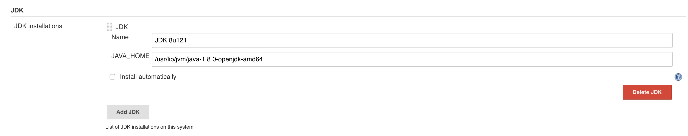
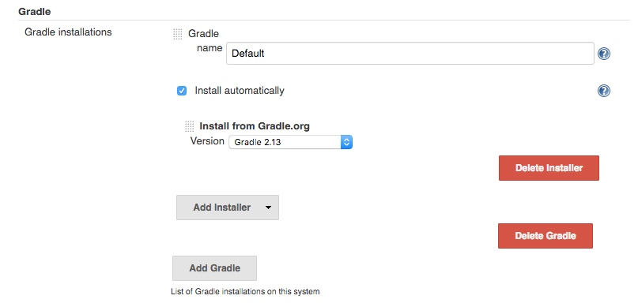
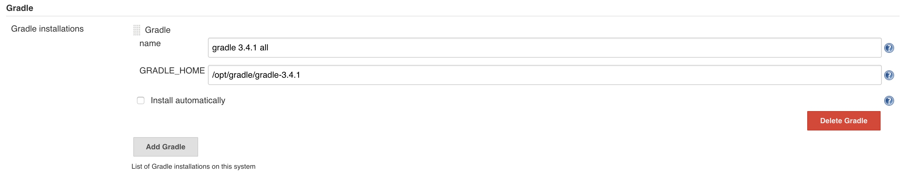
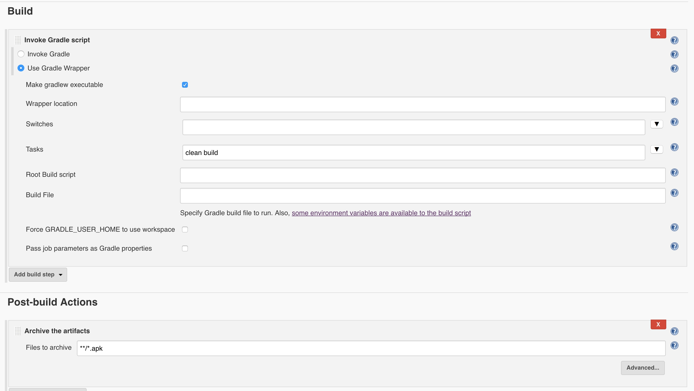

Day 3
Android with Jenkins
Trying to develop project using CI just cause I think it's a better way to maintain or tracking project progress.
Instal Jenkins
Just follow the official documentations.
Prepare Android Build Environment
cd /opt
# Download SDK tools
wget https://dl.google.com/android/repository/sdk-tools-linux-3859397.zip
# Uncompress it
unzip sdk-tools-linux-3859397.zip
# delete it
rm -rf sdk-tools-linux-3859397.zip
# goto tools folder
cd tools
# List installed and available packages
./sdkmanager --list
# Install packages
./sdkmanager "platforms;android-25"
./sdkmanager "build-tools;25.0.2"
# move platforms tools build-tools to one folder
mv platforms android-sdk
mv tools android-sdk
mv build-tools android-sdk
# give Jenkins permission to reach android-sdk
chmod -R 777 /opt/android-sdk
# Set environment variables
vim /etc/profile.d/android.sh
# In vim editor input following text
# export ANDROID_HOME="/opt/android-sdk"
# export PATH="$ANDROID_HOME/tools:$ANDROID_HOME/tools/bin:$ANDROID_HOME/platform-tools:$PATH"
# then save
# Reload and activate the variables
source /etc/profile
Configuring the JDK
Manage Jenkins -> Global Tool Configuration

Configuring the Android SDK
To build your project, the Android SDK will need a few packages. First, update the SDK itself(a few licenses will need to be accepted):
# Now android has been deprecated, should use sdkmanager/avdmanager instead.
android update sdk --no-ui
This will install :
emulator | 26.0.0 | Android Emulator | emulator/
patcher;v4 | 1 | SDK Patch Applier v4 | patcher/v4/
platform-tools | 25.0.5 | Android SDK Platform-Tools | platform-tools/
Configure Gradle plugin
Ref
Must configure this, or you may get a 'Cannot run program “gradle” in Jenkins' error
In the ** Global Tool Configuration.**

Or can manually download and configure it.

Jenkins Item setting
Using wrapper. The **/*.apk part make sure we can get the build result.

Other things should be careful
Day 1
RxJava
The Observer pattern done right. ReactiveX is a combination of the best ideas from the Observer pattern, the Iterator pattern, and functional programming. — ractivex.io
Upon this, it's obvious that we should first familiar the Observer pattern, the Iterator pattern and the functional programming. I think I'll cover these three part later.
The Java version of this concept is called RxJava, which hosted on Github RxJava
Main Concept
- Observables Representing sources of data.
- Subscribers (Observers) Listening to the Observables.
- a set of methods for modifying and composing the data
Some advantages of RxJava:
* You can chain async operations, e.g. if a API call depends on the call of another API
* A defined way to handle errors
* It reduces the need fro state variables, which can be the source of errors == Creating sources, subscribing to them and disposing them
Creating sources to observe
Observables are the sources for the data. Usually they start providing data once a subscriber starts listening. They can produce an empty, a single or multiple items. They can terminate with an error or success. Sources may never terminate, e.g., a observable for a button click can potentially produce an infinite stream of events.
Table 1. Table Observable types
| Type | Description |
|---|---|
| Flowable |
Emits 0 or n items and terminates with complete or an error. Supports backpressure, which allows to control how fast a source emits items. |
| Observable |
Emits 0 or n items and terminates with complete or an error. |
| Single |
Emits either a single item or an error. The reactive version of a method call. you subscribe to a Single and you get either a return value or an error. |
| Maybe |
Succeeds with an item, or no item, or errors. The reactive version of an Optional. |
| Completeable | Either completes or returns an error. It never return items. The reactive version of a Runnable. |
An example for the usage of backpressure is when you process touch events. You cannot control the user who is doing these touch events, but you can tell the source to emit the events on a slower rate in case you cannot processes them at the rate the user produces them. This has been designed for the support fro reactive streams. Only Flowable supports backpressure.
Observable<Interger> observable = Observable.create(new ObserverableOnSubscribe<Integer>(){
@Override
public void subscribe(@NonNull ObservableEmitter<Integer> observableEmitter) throws Exception {
observableEmitter.onNext(1);
observableEmitter.onNext(2);
observableEmitter.onNext(3);
observableEmitter.onComplete();
}
});
Observer<Integer> observer = new Observer<Integer>() {
@Override
public void onSubscribe(Disposable d) {
System.out.println("On Subscribe");
}
@Override
public void onNext(Integer value) {
System.out.println("On Next" + value);
}
@Override
public void onError(Throwable e) {
System.out.println("On Error");
}
@Override
public void onComplete() {
System.out.println("On Complete");
}
};
observable.subscribe(observer);
Copyright © 2015 Powered by MWeb, Theme used GitHub CSS.